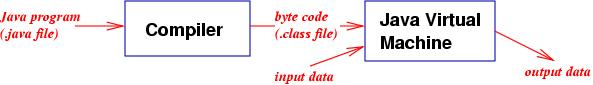
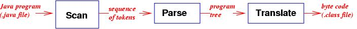

Grammars, trees, and lists play central roles in building compilers for programming languages. In this lecture we develop a compiler and a Virtual Machine (interpreter) for a mini-Java programming language.
First, a compiler program analyzes the syntax of the program to validate that the program is correctly spelled. The compiler then applies the ``translation semantics'' defined in the previous Lecture, translating the program into a sequence of instructions (``byte code'') that are easy for a CPU to execute.
The byte-code program is then read by a second program, an interpreter, which does the actions indicated by the byte codes. The Java interpreter is called the Java Virtual Machine.
How does a compiler check a program's syntax and semantics? This is done in three stages:
First, the lexical analyzer (``scanner''), reads your computer program, one letter at a time, and groups the letters into words. For example, the sequence, w, h, i, l, e spells the word, ``while.'' The output from the lexical analyzer is a list of words.
Next, the parser reads the words, one at a time, and builds a parse tree. The tree is input to the translator, which processes the tree and computes the tree's semantics, which in the case of Java is a byte-code program.
To understand better this process, we will design and build a compiler and an interpreter for a subset of Java.
The source language is a Java subset that we call ``mini-Java.'' First, here are the rules for phrases:
PROGRAM ::= { STATEMENT_LIST }
STATEMENT_LIST ::= [[ STATEMENT ; ]]*
STATEMENT :: = DATA_TYPE IDENTIFIER
| IDENTIFIER = EXPRESSSION
| println IDENTIFIER
| while EXPRESSION { STATEMENT_LIST }
DATA_TYPE ::= int | boolean
EXPRESSION ::= IDENTIFIER | NUMERAL | ( EXPRESSION OPERATOR EXPRESSION )
The first rule states that a program is a list of statements surrounded
by brackets,
and the second rule shows that each statement is terminated by a semicolon.
The third rule defines the language's four statement forms
(a variable declaration, an assignment, a print statement, and a loop).
The last two rules define the data type names and the expression phrases.
Here are the rules for words:
IDENTIFIER ::= LETTER [[ LETTER ]]* NUMERAL ::= DIGIT [[ DIGIT ]]* OPERATOR ::= + | == LETTER ::= A | B | C | ... | Z NUMERAL ::= 0 | 1 | ... | 9Identifiers are one or more letters, and numerals are one or more digits. There are just two operators, addition and equality comparison.
For simplicity, we assume that a mini-Java program separates all words by one or more blanks or newlines. Here is an example mini-Java program:
{ int A ;
A = 5 ;
while ( A == 5 ) { int B ; B = 6 ; A = ( B + A ) ;
println A ; } ;
boolean C ; println C ;
}
Here is the restatement of the mini-Java syntax
as an inductive definition. This is will be useful when we construct
the data types for mini-Java's parser:
The compiler's job is to read the text of a mini-Java program, check the grammatical correctness of the program, and translate the program into a program in the following target language, which is also defined by an inductive definition:
(0) loadconst 5 (1) store 0 (2) load 0 (3) loadconst 5 (4) equals (5) if0 14 (6) loadconst 6 (7) store 1 (8) load 1 (9) load 0 (10) add (11) store 0 (12) println 0 (13) goto 2 (14) println 1 (15) stop
The mini-Java virtual machine is simpler than the Java Virtual Machine (JVM). The mini-Java virtual machine uses these three data structures:
When the example byte-code program is executed by the interpreter (virtual machine), the execution starts with this configuration:
(0) {} {0, 0}
That is, the target program starts execution at instruction 0 with an empty
temporary value stack and a storage vector filled with zeros.
(We will see that just two storage cells in the storage vector suffice
for executing the example program.)
The starting instruction, Instruction 0, loadconst 5, pushes the numeral 5 onto the stack; the instruction counter increments to 1:
=> (1) {5} {0, 0}
Instruction 1, store 0, says to take the topmost (most recently
added) value from the stack and store it in variable cell 0.
The net effect is the execution of the statement A = 5, where
cell 0 stands for variable A:
=> (2) {5} {5, 0}
The next three instructions implement the loop test ( A == 5 ):
Instruction 2
copies the value in variable cell 0 onto the stack, and Instruction
3 loads another numeral 5. This gives us:
=> (4) {5, 5} {5, 0}
Instruction 4 removes the top two numerals from the stack and
compares them for equality. A ``true'' answer causes 1 to be
pushed; a ``false'' answer causes 0 to be pushed. The result this
time is ``true'':
=> (5) {1} {5, 0}
Instruction 5 pops the top value off the stack
and resets the instruction counter to 14 if
the value is 0. It is not, so the instruction counter is allowed
to increment to 6, and the body of the loop is entered:
=> (6) {} {5, 0}
Instructions 6 and 7 implement B = 6. Variable cell 1 has been
reserved already for B. We have this configuration as a result:
=> (8) {} {5, 6}
Instructions 8 through 11 implement A = ( B + A ).
After instructions 8 and 9 we have
=> (10) {5, 6} {5, 6}
and Instruction 10 adds the top two numerals on the stack, pushing the
result
=> (11) {11} {5, 6}
Instruction 11 stores the result in cell 0:
=> (12) {} {11, 6}
Instruction 12 cause the value in cell 0 to be printed to the console;
an 11 is printed.
Instruction 13 resets the instruction counter to 2, which causes the
loop to repeat:
=> (2) {} {11, 6}
Instructions 2 through 4 evaluate the test ( A == 5 ) a second
time. At instruction 4 we have this configuration
=> (4) {5,11} {11, 6}
and after Instruction 4, we see
=> (5) {0} {11, 6}
The execution of Instruction 5 pops the 0 from the stack and resets
the instruction counter to 14:
=> (14) {} {11, 6}
and the loop is exited.
Instruction 14 implements the statement println C. Notice that variable C has been given the same cell that variable B, within the loop, was using. This is because B cannot be used outside its scope so its cell can be reused by another variable. For better or for worse, the value in cell 1 is treated as the value of C, and true appears on the console. (The convention is that 0 stands for false and all other numbers stand for true.) We reach this configuration
=> (15) {} {11, 6}
and the program stops here.
The initial algorithm for the compiler consists of two steps:
read the input program, word by word, and build the program's tree representation; traverse the tree and translate it into a target program.The first step of the algorithm is called a parser; the second step is called a translator or code generator. The tree that the parser produces as output will be the input to the translator.
Before we refine the above two steps and create the necessary data structures, it is best to formalize the language of trees that constitutes that output from the parser (and the input to the translator).
A well-formed source program belongs to the set named PROGRAM and therefore has the form { STATEMENT_LIST }. The program's tree representation will be an object of data type ProgramTree:
/** ProgramTree stands for { STATEMENT_LIST } */
public class ProgramTree
{ private StmtListTree stmt_list;
public ProgramTree(StmtListTree s) { stmt_list = s; }
public StmtListTree stmtList() { return stmt_list; }
}
A ProgramTree-object must contain a StmtListTree component.
Of course, there is no need to save the { and } braces in the tree representation.
According to the inductive definition of STATEMENT_LIST, a statement list must be either STATEMENT ; STATEMENT_LIST or (nothing). These two possibilities generate a recursive data type with two subclasses:
abstract class StmtListTree { }
/** StmtList1 stands for STATEMENT ; STATEMENT_LIST */
class StmtList1 extends StmtListTree
{ private StmtTree stmt;
private StmtListTree rest;
public StmtList1(StmtTree s, StmtListTree r) { stmt = s; rest = r; }
public StmtTree stmt() { return stmt; }
public StmtListTree rest() { return rest; }
}
/** StmtList2 stands for (nothing) */
class StmtList2 extends StmtListTree
{ public StmtList2() {} }
Next, there are four different forms of STATEMENT, hence, there are four forms of StmtTree:
abstract class StmtTree {}
/** StmtDecl stands for DATA_TYPE IDENTIFIER */
class StmtDecl extends StmtTree
{ private String data_type; // save "int" or "boolean" here
private String id;
public StmtDecl(String d, String i) { data_type = d; id = i; }
public String dataType() { return data_type; }
public String id() { return id; }
}
/** StmtAssign stands for IDENTIFIER = EXPRESSSION */
class StmtAssign extends StmtTree
{ private String id;
private ExprTree expr;
public StmtAssign(String i, ExprTree e) { id = i; expr = e; }
public String id() { return id; }
public ExprTree expr() { return expr; }
}
/** StmtPrintln stands for println IDENTIFIER */
class StmtPrintln extends StmtTree
{ private String id;
public StmtPrintln(String i) { id = i; }
public String id() { return id; }
}
/** StmtWhile stands for while EXPRESSION { STATEMENT_LIST } */
class StmtWhile extends StmtTree
{ private ExprTree expr;
private StmtListTree stmt_list;
public StmtWhile(ExprTree e, StmtListTree s) { expr = e; stmt_list = s; }
public ExprTree expr() { return expr; }
public StmtListTree stmtList() { return stmt_list; }
}
For example, the tree corresponding to a
declaration statment, boolean C, would be constructed by
new StmtDecl("boolean", "C"), which would generate the object,
a1 == StmtDecl{data_type == "boolean", id == "C"}
that is, at address a1
in the heap.
Finally, here is the data type that represents the forms of EXPRESSION:
abstract class ExprTree {}
/** ExprNumeral stands for NUMERAL */
class ExprNumeral extends ExprTree
{ private String num;
ExprNumeral(String n){ num = n; }
String num() { return num; }
}
/** ExprId stands for IDENTIFIER */
class ExprId extends ExprTree
{ private String id;
ExprId(String i) { id = i; }
String id() { return id; }
}
/** ExprBinOp stands for ( EXPRESSION OPERATOR EXPRESSSION ) */
class ExprBinOp extends ExprTree
{ private ExprTree expr1;
private String op; // save "+" or "==" here
private ExprTree expr2;
ExprBinOp(ExprTree e1, String o, ExprTree e2)
{ expr1 = e1; op = o; expr2 = e2; }
ExprTree expr1() { return expr1; }
String op() { return op; }
ExprTree expr2() { return expr2; }
}
For example, the tree for the expression, ( A == 2 ), would be
constructed
by new ExprBinOp(new ExprId("A"), "==", new ExprNumeral("2")).
This would trigger the allocation of 3 heap objects, say,
a2 == ExprBinOp{ expr1 == a3, op == "==", expr2 == a4}
a3 == ExprId{id == "A"}
a4 == ExprNumeral{num == "2"}
Therefore, the assignment statement,
B = ( A == 2), would be constructed by
new StmtAssign("A", a2), giving the object
a5 == StmtAssign{id == "A", expr == a2}
Finally, the sequence
boolean B ; B = ( A == 2) would be generated by
new StmtList1(a1, new StmtList1(a5, new StmtList2())),
giving these additional objects:
a6 == StmtList2{}
a7 == StmtList1{stmt == a5, rest == a6}
a8 == StmtList1{stmt == a1, rest == a7}
and the object at address a8 represents the tree for the statement
sequence.
Based on the above data types, here is the tree representation in the heap for the example mini-Java program seen earlier in this section:
a0 == ProgramTree{stmt_list == a1}
a1 == StmtList1{stmt == a2, rest == a3}
a2 == StmtDecl{data_type == "int", id == "A"} // int A ;
a3 == StmtList1{stmt == a4, rest == a6}
a4 == StmtAssign{id == "A", expr == a5} // A = 5 ;
a5 == ExprNumeral{num == "5"}
a6 == StmtList1{stmt == a7, rest == a24}
// the while-loop extends from a7 through a23
a7 == StmtWhile{expr == a8, stmt_list == a11}
a8 == ExprBinOp{expr1 == a9, op == "==", expr2 == a10} // ( A == 5 )
a9 == ExprId{id == "A"}
a10 == ExprNumeral{num == "5"}
a11 == StmtList1{stmt == a12, rest == a13}
a12 == StmtDecl{data_type == "int", id == "B"} // int B ;
a13 == StmtList1{stmt == a14, rest == a16}
a14 == StmtAssign{id == "B", expr == a15} // B = 6 ;
a15 == ExprNumeral{num == "6"}
a16 == StmtList1{stmt == a17, rest == a21}
a17 == StmtAssign{id == "A", expr == a18} // A = ... ;
a18 == ExprBinOp{expr1 == a19, op == "+", expr2 == a20} // ( B + A )
a19 == ExprId{id == "B"}
a20 == ExprId{id == "A"}
a21 == StmtList1{stmt == a22, rest == a23}
a22 == StmtPrintln{id == "A"} // println A ;
a23 == StmtList2{}
a24 == StmtList1{stmt == a25, rest == a26}
a25 == StmtDecl{data_type == "boolean", id == "C"} // int C ;
a26 == StmtList1{stmt == a27, rest == a28}
a27 == StmtPrintln{id == "C"} // println C
a28 == StmtList2{}
The parser's job is to build a tree like the one above from its input source program. Such a tree is often called a parse tree. We now proceed to design and implement a parser for mini-Java.
The mini-Java language inductive definition possesses enough key words so that each well-formed mini-Java program encodes a unique program tree. The technical term is that the language definition is a determininistic grammar. Furthermore, the keywords are located in stategic positions in the grammar so that the parser can deterministically build the program tree by reading the input source program just once, one word at a time. The technical term for this property is that the language definition is an LL(1)-grammar.
There is a famous implementation method for LL(1)-grammars, called recursive-descent parsing, that we will employ. But before we do so, we must sort out which data structures the parser will use and create classes for these structures.
The previous subsection made clear that the parser needs the family of tree structures to produce an output tree. We have those classes already. Next, what data structures are needed for the input format? The parser must read its input, one word at a time, from a sequential ASCII file. It is best to define a class to hold the file, and the class can contain a method that returns input words, one at a time, to the parser. It is traditional to call such a class a lexical analyzer.
Here is a specification of the lexical analyser, Lex:
Fields: private DataInputStream infile - the input file Constructor: public Lex(String filename) - initializes infile with filename Methods: public String getWord() - returns the next unread word from the input file public void close() - closes the input filePerhaps addtional private fields and methods will be necessary, but the above specifies the main needs of the Lex class. Some refinement of the algorithm for getWord might be helpful, but this ground was covered in Chapter 7 and is now routine. So, here is the code for Lex:
import java.io.*;
import java.util.*;
/** Lex holds an input file and reads it, one word at a time.
* Important: words must be separated by blanks, tabs, or newlines. */
class Lex
{ public static final String EOF_TOKEN = "end of file";
private DataInputStream infile; // the input file
private StringTokenizer t; // the next unread text line in file
/** getNextLineOfTokens loads t with next input line */
private StringTokenizer getNextLineOfTokens()
{ try { String s = infile.readLine();
System.out.println(s); // let user see each input line
return new StringTokenizer(s); }
catch (IOException e) { System.out.println("Lex: IOException");
return new StringTokenizer(EOF_TOKEN,"!"); }
}
/** Constructor Lex opens the input file.
* @param filename - the name of the input file. */
public Lex(String filename)
{ try { infile = new DataInputStream(new FileInputStream(filename));
t = getNextLineOfTokens(); }
catch (IOException e) { System.out.println("Lex: IOException"); }
}
/** getWord gets the next unread word from the input file.
* @return the next unread word */
public String getWord()
{ try { if ( t.hasMoreTokens() )
{ return t.nextToken(); }
else { if ( infile.available() != 0 )
{ t = getNextLineOfTokens(); return getWord(); }
else { infile.close(); return EOF_TOKEN; }
}
}
catch (IOException e) { System.out.println("Parse: IOException");
return EOF_TOKEN; }
}
/** close closes the input file. */
public void close() { infile.close(); }
}
Testing of Lex is straightforward: Write a program that creates
a Lex-object and then repeatedly invokes getWord.
The next step is the formulation of the algorithm for the parser itself. We start by designing an algorithm for a small subset of mini-Java: the EXPRESSION part. Again, here is the inductive definition of EXPRESSION phrases:
a1 == ExprId{id == "A"}
a2 == ExprNumeral{num == "2"}
a3 == ExprId{id == "B"}
a4 == ExprBinOp{expr1 == a2, op == "+", expr2 == a3}
a5 == ExprBinOp{expr1 == a1, op == "==", expr2 == a4}
It is easy to see these relationships between key words and tree structures:
The answer is again to pretend that the input program is a tree, so the job of the parser is to traverse the ``input tree'' and generate an output tree from it. This implies that the algorithm for building an ExprTree should be constructed so that it looks like a tree traversal algorithm. We call the algorithm, parseExpr; it is a function that returns as its result the tree it builds. (In the algorithm that follows, say that word is the next unread word from the input file; recall that getWord is the method from Lex that gets a new word.)
public ExprTree parseExpr()
{ if ( word is a NUMERAL )
{ construct an ExprNumeral-tree with word;
getWord(); return the tree; }
else if ( word is an IDENTIFIER )
{ construct an ExprId-tree with word;
getWord(); return the tree; }
else if ( current word == "(" )
{ getWord(); ExprTree e1 == parseExpr(); // build left subtree
if ( word == "+" or "==" )
{ String op = word; getWord();
ExprTree e2 == parseExpr(); // build right subtree
if ( word == ")" )
{ construct ExprBinOp-tree with e1, op, e2;
getWord(); return the tree; }
else { error; }
}
else { error; }
}
else { error; }
}
The three forms of EXPRESSION mean there are three if-statements.
The interesting case arises when word is (:
An ExprBinOp-tree must be built, so
a recursive invocation to ExprTree traverses the words that
encode the left operand of the binary expression and returns
the corresponding tree, e1. After the recursive invocation completes,
the next input word must be the operator symbol of the binary
expression,
so the operator symbol is saved as op.
Another recursive invocation traverses the words that represent
the right operand, and a
tree, called e2, is returned. Finally, the ) is read and the
ExprBinOp tree can be built with e1, op, and e2.
If we apply the above function to the input ( A == ( 2 + B ) ), we see that
This style of building the parse tree is called recursive-descent parsing. It is largely a mechanical technique to generate the code for a recursive-decent parser from the inductive definition of the source language, so we move directly to the parser for the complete language definition:
/** Parse implements a parser for mini-Java */
public class Parse
{ private Lex lex; // lexical analyzer
private String word; // invariant: upon entry to any method, word holds
// the next unread input word
private boolean parse_is_correct; // remembers if any syntax errors found
/** Constructor Parse initializes the parser
* @param filename - the input file where the input source program lives */
public Parse(String filename)
{ lex = new Lex(filename);
word = lex.getWord(); parse_is_correct = true; }
/** isValidParse gives outcome of parse
* @return whether any syntax errors appeared during parse */
public boolean isValidParse() { return parse_is_correct; }
/** error prints an error message and tries to recover from parse error */
private void error(String token)
{ System.out.println("Parse error: Expected " + token + ". Saw " + word );
word = lex.getWord(); parse_is_correct = false; }
/** isId returns whether s is a legal IDENTIFIER */
private boolean isId(String s)
{ boolean answer = true;
for ( int i=0; i!= s.length(); ++i )
{ answer = answer && 'A' <= s.charAt(i) && s.charAt(i) <= 'Z'; };
return answer; }
/** isNum returns whether s is a legal NUMERAL */
private boolean isNum(String s)
{ boolean answer = true;
for ( int i=0; i!= s.length(); ++i )
{ answer = answer && '0' <= s.charAt(i) && s.charAt(i) <= '9'; };
return answer; }
/** parseProgram builds tree for PROGRAM ::= { STATEMENT_LIST }
* @return the tree that the input program represents */
public ProgramTree parseProgram()
{ if ( word.equals("{") )
{ word = lex.getWord();
StmtListTree stmt_list = parseStmtList();
if ( word.equals("}") )
{ word = lex.getWord();
if ( !word.equals(Lex.EOF_TOKEN) ) { error("end of file"); };
return new ProgramTree(stmt_list); }
else { error("}"); return null; }
}
else { error("{"); return null; }
}
/** parseStmtList builds tree for
* STATEMENT_LIST ::= STATEMENT ; STATEMENT_LIST | (nothing)
* @return the tree that the input statement list represents */
public StmtListTree parseStmtList()
{ if ( word.equals("}") ) // no more STATEMENTs left in list?
{ return new StmtList2(); }
else { StmtTree t = parseStmt();
if ( word.equals(";") )
{ word = lex.getWord();
StmtListTree rest = parseStmtList();
return new StmtList1(t, rest); }
else { error(";"); return null; }
}
}
/** parseStmt builds tree for
* STATEMENT ::= DATA_TYPE IDENTIFIER | IDENTIFIER = EXPRESSION
* | println IDENTIFIER | while EXPRESSION { STATEMENT_LIST }
* @return the tree that the input statement represents */
public StmtTree parseStmt()
{ if ( word.equals("int") || word.equals("boolean") )
{ String datatype = word;
word = lex.getWord();
if ( isId(word) )
{ String id = word; word = lex.getWord();
return new StmtDecl(datatype, id); }
else { error("an Identifier"); return null; }
}
else if ( isId(word) )
{ String id = word; word = lex.getWord();
if ( word.equals("=") )
{ word = lex.getWord();
ExprTree e = parseExpr();
return new StmtAssign(id, e); }
else { error("="); return null; }
}
else if ( word.equals("println") )
{ word = lex.getWord();
if ( isId(word) )
{ String id = word; word = lex.getWord();
return new StmtPrintln(id); }
else { error("an Identifier"); return null; }
}
else if ( word.equals("while") )
{ word = lex.getWord();
ExprTree e = parseExpr();
if ( word.equals("{") )
{ word = lex.getWord();
StmtListTree t = parseStmtList();
if ( word.equals("}") )
{ word = lex.getWord();
return new StmtWhile(e, t); }
else { error("}"); return null; }
}
else { error("{"); return null; }
}
else { error("a Statement"); return null; }
}
/** parseExpr builds tree for
* EXPRESSION ::= NUMERAL | IDENTIFIER | ( EXPRESSION OPERATOR EXPRESSION )
* @return the tree that the input expression represents */
public ExprTree parseExpr()
{ if ( isNum(word) )
{ String n = word; word = lex.getWord();
return new ExprNumeral(n); }
else if ( isId(word) )
{ String id = word; word = lex.getWord();
return new ExprId(id); }
else if ( word.equals("(") )
{ word = lex.getWord();
ExprTree e1 = parseExpr();
if ( word.equals("+") || word.equals("==") )
{ String op = word; word = lex.getWord();
ExprTree e2 = parseExpr();
if ( word.equals(")") )
{ word = lex.getWord();
return new ExprBinOp(e1, op, e2); }
else { error(")"); return null; }
}
else { error("+ or =="); return null; }
}
else { error("a Numeral, Identifier, or ("); return null; }
}
}
Each method, parseFORM, implements the recursive-descent parser
for the language phrase, FORM. Much of the parser's code is
occupied with refreshing the value of the next input word, which
is kept in variable word, and checking for possible grammatical
errors in the input source program. Notice that the inductive definition
of mini-Java is embedded within the comments for each method: A well known
notation for encoding inductive definitions, called BNF
(for Backus-Naur form), is used. For example,
EXPRESSION ::= NUMERAL | IDENTIFIER | ( EXPRESSION OPERATOR EXPRESSION )is the BNF assertion that an EXPRESSION has the three possible structures defined above.
Of course, when one builds such a parser from scratch, it is best to follow the usual technique of building an initial implementation for just a small part of the input language---say, the part for EXPRESSION---and testing that subset extensively. Next, the methods for parsing STATEMENTs, STATEMENT_LISTs, etc., can be coded and tested incrementally.
Since the output from the main parser method, parseProgram, is a ProgramTree, one can not display the tree directly on the console. Therefore, it is useful to add to the Parse class a set of methods that traverse a ProgramTree and print a representation of it on the console. Here is the method that prints ExprTrees:
public void printExprTree(ExprTree t)
{ System.out.println("beginExpr");
if ( t instanceof ExprNumeral )
{ System.out.println("numeral " + ((ExprNumeral)t).num() ); }
else if ( t instanceof ExprId )
{ System.out.println("id " + ((ExprId)t).id() ); }
else if ( t instanceof ExprBinOp )
{ printExprTree(((ExprBinOp)t).expr1());
System.out.println(((ExprBinOp)t).op());
printExprTree(((ExprBinOp)t).expr2()); }
else { System.out.println("ERROR"); };
System.out.println("endExpr");
}
Thus, the ExprTree, a5,
built earlier from the input, ( A == ( 2 + B ) ), would be displayed by
invoking printExprTree(a5), and this prints on the console:
beginExpr beginExpr id A endExpr == beginExpr beginExpr numeral 2 endExpr + beginExpr id B endExpr endExpr endExprThe print methods for the other syntactic forms of mini-Java are left as a routine coding exercise.
A translator's job is not completely trivial: It must manage the variable names that appear in the mini-Java program. Most importantly, each variable must be converted into a numerical address. Also, the scope of each variable name must be calculated and enforced. And, the translator must verify that no two variables with the same name have scopes that overlap (cf. Chapter 3). Finally, the translator must perform type checking on all expressions and statements.
To control the complexity of the translator, it is helpful to identify its inputs and outputs as well as any major internal data structures. All of these should be placed in classes. The input structures are of course the trees produced by the parser, and these structures are encoded already as classes. The output structures are instructions in the target language, and it is best to define a class with methods for storing target instructions. Here is the initial specification that we use:
class TargetCode
Constructor:
public TargetCode() - initializes object so that 0 instructions have been
generated
Methods:
public void close() - terminates object
public void generate1(String operator) - saves a one-argument target
instruction, e.g., generate1("add").
public void generate2(String operator, int operand) - saves a two-argument
instruction, e.g, generate2("loadconst", 4).
public int currentCount() - returns the count of how many instructions
have been generated so far
public void patchIns(int ins, int patch_number) - alters instruction
number ins so that its second argument is set to
patch_number (This is used specifically for the if0
instruction,
which must be first generated and later patched.)
The purpose of the patchIns method will be made clear later; the
method handles a well-known problem of translating while-loops.
Rather than refine this specification further, we will work with the
above for the moment and develop the details later.
The translator uses as its primary internal data structure a table, called a symbol table or declaration table, that holds the input program's variable declarations. In its simplest form, a symbol table is a cons-list of identifier, data type, address triples, e.g., the declaration int A would cause A and int to be saved within an element of the symbol table along with a newly generated numerical address for the variable. Later, when variable A is referenced, say as part of an expression, the symbol table is consulted about A to verify that
class DeclTable
Fields:
private ConsList decl_list - a list of all declared variables whose
scopes are still valid
private int count - a count of the number of variables in the decl_list
Constructor:
public DeclTable() - initializes the decl_list to Nil
Methods:
public boolean add(String id, String data_type) - attempts to add the
variable declaration of id to the decl_list. If id not already
declared, it is added to the list, a new address is created for it,
and true is returned as the answer. Else false is returned.
public boolean isDeclared(String id) - returns whether id has an entry
in decl_list
public int addressOf(String id) - returns the numerical address of id
public String dataTypeOf(String id) - returns the data type of id
public void markScope() - marks the decl_list to note that a new scope
level, denoted by { ... } brackets in the source program, has been
entered
public void releaseScope() - Notes that a scope level has been exited
and removes from the decl_list all declarations that were made since
the most recent invocation of markScope.
The last two methods are necessary to formalize the scope of a declaration. Recall from Chapter 3 that the scope of a variable declaration extends from its declaration statement until the first unmatched right brace, }. Thus, the symbol table must delete the declarations of all variables declared within { STATEMENT_LIST } when the STATEMENT_LIST is completely traversed. This is done with an invocation to releaseScope(). (Note that markScope() must be invoked upon entry to STATEMENT_LIST.) For example, this program, { int A ; while ( A == 1 ) { int B ; B = 1 ; } ; A = B ; } is erroneous because the scope of B's declaration does not cover A = B. The translator will note this when it asks isDeclared("B") when it attempts to translate A = B.
The crucial part of the DeclTable class is decl_list. Here is its code plus the code of the two auxiliary classes that it uses:
private ConsList decl_list;
// invariants: no identifier appears twice; each identifier in list
// has a unique address; each element is a DeclItem or a ScopeMarker
private int count; // holds count of elements in decl_list
The invariants for decl_list are crucial and must be maintained
by all methods in the DeclTable class. Here are the definitions of the
element types that can be inserted into decl_list:
/** DeclItem holds information about a variable name declaration */
class DeclItem implements Element
{ private String id;
private String data_type;
private int address;
public DeclItem(String i, String t, int a)
{ id = i; data_type = t; address = a; }
public String id() { return id; }
public String dataType() { return data_type; }
public int address() { return address; }
}
/** ScopeMarker notes that a new scope level, {...}, was entered */
class ScopeMarker implements Element
{ int previous_count; // the number of active declarations upon scope entry
ScopeMarker(int c) { previous_count = c; }
int getCount() { return previous_count; }
}
Individual variable declarations are saved in DeclItem-objects,
and when a new scope is entered, a ScopeMarker-object is added to
decl_list. For example, here are the values of count and
decl_list when the translator is in the middle of traversing
the while-loop in the above example:
int count == 2
ConsList decl_list == a7
where a1 == Nil{}
a2 == DeclItem{id == "A", data_type == "int", address == 0}
a3 == Cons{hdhd == a2, tl == a1}
a4 == ScopeMarker{previous_count == 1}
a5 == Cons{hd == a4, tl a3}
a6 == DeclTiem{id == "B", data_type == "int", address == 1}
a7 == Cons{hd == a6, tl == a5}
The ScopeMarker marks the point where the decl_list
should be shortened (and count should be reset) once the
while-loop is completely traversed.
The complete code for the DeclTable goes as follows:
/** DeclTable implements a symbol table */
public class DeclTable
{ private ConsList decl_list;
// invariants: no identifier appears twice; each identifier in list
// has a unique address; each element is a DeclItem or a ScopeMarker
private int count; // holds count of elements in decl_list
/** Constructor DeclTable initializes the table to be empty */
public DeclTable() { decl_list = new Nil(); count = 0; }
/** markScope marks the table that a new scope level is entered */
public void markScope()
{ decl_list = new Cons(new ScopeMarker(count), decl_list); }
/** releaseScope removes from the table all declarations that were
* added since the last time markScope was invoked */
public void releaseScope()
{ if ( decl_list instanceof Cons )
{ Element e = ((Cons)decl_list).head();
decl_list = ((Cons)decl_list).tail(); // shorten decl_list
if ( e instanceof ScopeMarker )
{ count = ((ScopeMarker)e).getCount(); }
else { releaseScope(); }
}
else { System.out.println("DeclTable error: no scope to release"); }
}
/** add attempts to add a declaration of variable name id to the table
* @param id - the variable name to be added
* @param data_type - the variable's data type
* @return whether the declaration was successfully added to the table */
public boolean add(String id, String data_type)
{ if ( find(id, decl_list) == null )
{ decl_list = new Cons(new DeclItem(id, data_type, count), decl_list);
++count; return true; }
else { System.out.println("DeclTable error: " + id + " already exists");
return false; }
}
/** isDeclared searches the table for a declaration for variable id
* @param id - the variable name to be found
* @return whether id is declared in the table */
public boolean isDeclared(String id)
{ return find(id, decl_list) != null; }
/** addressOf locates the numeric address of variable name id
* @param id - the variable to be found
* @return id's numeric address */
public int addressOf(String id)
{ DeclItem d = find(id, decl_list);
if ( d == null )
{ System.out.println("DeclTable error: " + id + " not exists");
return -1; }
else { return d.address(); }
}
/** dataTypeOf locates the data type of variable name id
* @param id - the variable to be found
* @return id's data type */
public String dataTypeOf(String id)
{ DeclItem d = find(id, decl_list);
if ( d == null )
{ System.out.println("DeclTable error: " + id + " not exists");
return ""; }
else { return d.dataType(); }
}
/** find returns the heap address of id's DeclItem, if it exists in c */
private DeclItem find(String id, ConsList c)
{ if ( c instanceof Nil )
{ return null; }
else { Element e = ((Cons)c).head();
ConsList t = ((Cons)c).tail();
if ( e instanceof ScopeMarker )
{ return find(id, t); }
else { DeclItem d = (DeclItem)e;
if ( id.equals(d.id()) )
{ return d; }
else { return find(id, t); }
}
}
}
}
The codings of the methods follow the usual patterns for computing upon
cons-lists. The only remaining important issue is that all invariants
for decl_list are preserved by all methods---the definitions of
add and releaseScope are crucial here. The most challenging
result, that each variable in decl_list has a unique address, follows
from the observation that all addresses of all variables in
decl_list are less than the value of count.
At this point, we are ready to implement the translator itself. We know already that the translator will use these two objects:
private DeclTable decls = new DeclTable(); // symbol table private TargetCode out; // holds target instructionsWe use these objects in our initial algorithm for traversing an ExprTree and generating the correct target instructions. In addition to generating target instructions, the algorithm returns the data type of the expression it processes:
public String translateExprTree(ExprTree t)
{ if ( t is an ExprNumeral )
{ out.generate2(loadconst, t.num()); return "int"; }
else if ( t is an ExprId )
{ String i = t.id();
if ( decls.isDeclared(i) )
{ out.generate2(load, decls.addressOf(i));
return decls.dataTypeOf(i); }
else { error; }
}
else { // t is an ExprBinOp, so...
ExprTree e1 = t.expr1(); ExprTree e2 = t.expr2();
String type1 = translateExprTree(e1);
String type2 = translateExprTree(e2);
verify that type1 and type2 are compatible with t.op();
out.generate1(add) or out.generate1(equals), depending on t.op();
return the data type of the entire expression; }
}
Many details need refinement, but the basic structure is in place:
Each form of ExprTree generates a specific sequence of target instructions,
and in the case of a ExprBinOp-tree, the data types of the operands must
be checked with the operator of the binary expression. Also, the
processing of an ExprId must verify that the identifier is declared.
For an example like ( A == ( 2 + B ) ) whose tree appears in the heap as
a1 == ExprId{id == "A"}
a2 == ExprNumeral{num == "2"}
a3 == ExprId{id == "B"}
a4 == ExprBinOp{expr1 == a2, op == "+", expr2 == a3}
a5 == ExprBinOp{expr1 == a1, op == "==", expr2 == a4}
the following steps would occur upon invocation of
translateExprTree(a5):
load a loadconst 2 load b add equals
Here is the refinement of translateExprTree as well as the rest of the code for the Translate class:
/** Translate translates a parse tree into target language instructions */
public class Translate
{ private DeclTable decls = new DeclTable(); // symbol table
private TargetCode out; // target language instructions
private boolean translation_is_correct = true;
/** Constructor Translate initializes the translation */
public Translate()
{ out = new TargetCode(); }
/** translationCorrect returns status of translation
* @return whether any errors have arisen in translation so far */
public boolean translationCorrect() { return translation_is_correct; }
private void error(String s)
{ System.out.println(s); translation_is_correct = false; }
/** translateProgramTree translates a program tree into target instructions
* @param t - the program tree to be translated
* @return an object containing the target instructions */
public TargetCode translateProgramTree(ProgramTree t)
{ translateStmtListTree(t.stmtList());
out.generate1("stop"); out.close(); return out; }
/** translateStmtListTree translates a statement list
* @param t - the statement list to be translated */
public void translateStmtListTree(StmtListTree t)
{ decls.markScope(); translateStmts(t); decls.releaseScope(); }
private void translateStmts(StmtListTree t)
{ if ( t instanceof StmtList1 )
{ translateStmtTree( ((StmtList1)t).stmt() );
translateStmts( ((StmtList1)t).rest() ); }
else { } // t instanceof StmtList2 --- nothing to do
}
/** translateStmtTree translates a statement
* @param t - the statement to be translated */
public void translateStmtTree(StmtTree t)
{ if ( t instanceof StmtDecl )
{ String id = ((StmtDecl)t).id();
String type = ((StmtDecl)t).dataType();
if ( decls.isDeclared(id) )
{ error("Identifier " + id + " declared twice"); }
else { decls.add(id, type); }
}
else if ( t instanceof StmtAssign )
{ String id = ((StmtAssign)t).id();
ExprTree e = ((StmtAssign)t).expr();
if ( decls.isDeclared(id) )
{ String expr_type = translateExprTree(e);
if ( expr_type.equals(decls.dataTypeOf(id)) )
{ out.generate2("store", decls.addressOf(id) ); }
else { error("type mismatch on assignment"); }
}
else { error("assignment target not declared"); }
}
else if ( t instanceof StmtPrintln )
{ String id = ((StmtPrintln)t).id();
if ( decls.isDeclared(id) )
{ out.generate2("println", decls.addressOf(id)); }
else { error("println variable not declared"); }
}
else // t instanceof StmtWhile
{ ExprTree e = ((StmtWhile)t).expr();
StmtListTree s = ((StmtWhile)t).stmtList();
int top_of_loop = out.currentCount(); // the start of loop code
String expr_type = translateExprTree(e);
if ( expr_type.equals("boolean") )
{ int loop_patch = out.currentCount();
out.generate2("if0", -1); // this must be patched later
translateStmtListTree(s);
out.generate2("goto", top_of_loop ); // branch to loop start
out.patchIns(loop_patch, out.currentCount()); } // patch it
else { error("while test not boolean-typed"); }
}
}
/** translateExprTree translates an expression
* @param t - the expression to be translated
* @return the data type of the expression */
public String translateExprTree(ExprTree t)
{ if ( t instanceof ExprNumeral )
{ out.generate2("loadconst",Integer.parseInt(((ExprNumeral)t).num()));
return "int"; }
else if ( t instanceof ExprId )
{ String id = ((ExprId)t).id();
if ( decls.isDeclared(id) )
{ out.generate2("load", decls.addressOf(id));
return decls.dataTypeOf(id); }
else { error("variable not declared"); return ""; }
}
else // t instanceof ExprBinOp
{ ExprTree e1 = ((ExprBinOp)t).expr1();
String op = ((ExprBinOp)t).op();
ExprTree e2 = ((ExprBinOp)t).expr2();
String type1 = translateExprTree(e1);
String type2 = translateExprTree(e2);
if ( op.equals("+") && type1.equals("int") && type2.equals("int") )
{ out.generate1("add"); return "int"; }
else if ( op.equals("==") && type1.equals(type2) )
{ out.generate1("equals"); return "boolean"; }
else { error("mismatch of expression operand types"); return ""; }
}
}
}
What little novelty that there is in the above code lies in the translation
of the while-loop: Because the if0 instruction in the translation
must contain a forwards branch to the instruction that follows the loop,
and because the if0 instruction must be generated before the
target instructions for the remainder of the loop, an incorrect instruction,
if0 -1, is generated initially and is later repaired (``patched'')
once the address of the last loop instruction is known.
Finally, here is the coding of the class TargetIns, which handles the generation of the target instructions. In the usual case, TargetIns would send the generated target instructions to a sequential file, but it is convenient for this example to keep the instructions in an array. This makes the coding of method patchIns simple. The class uses two auxiliary classes, which are presented first.
/** TargetIns represents a one-argument instruction */
class TargetIns
{ public String operator;
public TargetIns(String op) { operator = op; }
}
/** TargetIns2 represents a two-argument instruction */
class TargetIns2 extends TargetIns
{ public int operand;
public TargetIns2(String rator, int rand)
{ super(rator); operand = rand; }
}
/** TargetCode contains a target program */
public class TargetCode
{ private static final int MAX_CODE_SIZE = 100;
private TargetIns[] code = new TargetIns[MAX_CODE_SIZE];
// invariant: target program held within code[0]..code[code_count-1]
private int code_count = 0;
/** Constructor TargetCode initializes the target program */
public TargetCode()
{ code = new TargetIns[MAX_CODE_SIZE]; code_count = 0; }
private void error(String what) { System.out.println(what); }
/** generate1 adds a one-argument instruction to the target program.
* @param operator - the instruction */
public void generate1(String operator)
{ if ( code_count != MAX_CODE_SIZE )
{ code[code_count] = new TargetIns(operator); ++code_count; }
else { error("max. code size exceeded"); }
}
/** generate2 adds a two-argument instruction to the target program.
* @param operator - the first half of the instruction
* @param operand - the second half of the instruction */
public void generate2(String operator, int operand)
{ if ( code_count != MAX_CODE_SIZE )
{ code[code_count] = new TargetIns2(operator, operand);
++code_count; }
else { error("max. code size exceeded"); }
}
/** currentCount returns the size of the target program
* @return - the instruction number for the next generated instruction */
public int currentCount() { return code_count; }
/** patchIns changes a two-argument instruction in the target program
* @param instruction - the instruction to be altered
* @param new - the new second argument for instruction */
public void patchIns(int instruction, int new)
{ ((TargetIns2)code[instruction]).operand = new; }
/** getInstruction fetches an instruction from the target program
* @param i - the address of the instruction to be fetched
* @return the (heap address of) the instruction */
public TargetIns getInstruction(int i)
{ return code[i]; }
/** dumpCode prints the target program on the console */
public void dumpCode()
{ for ( int i = 0; i!= code_count; ++i )
{ System.out.print( code[i].operator );
if ( code[i] instanceof TargetIns2 )
{ System.out.println( " " + ((TargetIns2)code[i]).operand ); }
else { System.out.println(); }
}
}
}
The last two methods of the the class, getInstruction and dumpCode,
were not mentioned in the original specification. The former will be
used by the interpreter for mini-Java and the latter displays a
target program on the console, which is helpful for testing purposes.
As with the parser, the proper way of implementing a translator from scratch is to first implement a translator for just a few tree forms (e.g., ExprTree) and rigorously test the initial implementation. Translations for the other tree forms are added later.
/** Interpret implements an intepreter for the target language */
public class Interpret
{ private static final int MAX_STORE_SIZE = 20;
private TargetCode code; // program to be interpreted
private int ic; // instruction counter
private IntStack temp = new IntStack(); // value stack
private int[] storage = new int[MAX_STORE_SIZE]; // storage vector
/** Constructor Interpret initializes the interpreter
* @param c - the target program to be interpreted */
public Interpret(TargetCode c)
{ code = c; ic = 0; }
/** execute interprets the target program */
public void execute()
{ boolean executing = true;
while ( executing )
{ TargetIns ins = code.getInstruction(ic);
String rator = ins.operator;
++ic;
if ( rator.equals("load") )
{ temp.push( storage[((TargetIns2)ins).operand] ); }
else if ( rator.equals("loadconst") )
{ temp.push( ((TargetIns2)ins).operand); }
else if ( rator.equals("store") )
{ storage[((TargetIns2)ins).operand] = temp.pop(); }
else if ( rator.equals("add") )
{ int op1 = temp.pop(); int op2 = temp.pop();
temp.push( op1 + op2 ); }
else if ( rator.equals("equals") )
{ int op1 = temp.pop(); int op2 = temp.pop();
temp.push( op1 == op2 ? 1 : 0 ); }
else if ( rator.equals("println") )
{ System.out.println( storage[((TargetIns2)ins).operand] ); }
else if ( rator.equals("if0") )
{ if ( temp.pop() == 0 )
{ ic = ((TargetIns2)ins).operand; }
}
else if ( rator.equals("goto") )
{ ic = ((TargetIns2)ins).operand; }
else if ( rator.equals("stop") )
{ executing = false; }
else { System.out.println("Interpret error: invalid instruction");
executing = false; }
}
}
}
Method execute is a loop that does no more than fetch the next
instruction to be executed, increment the instruction counter, and
enact the instruction.
/** CompileAndGo compiles and interprets a mini-Java program.
* The source program is named as an argument on the command
* line, e.g.: java CompileAndGo test.dat */
public class CompileAndGo
{ public static void main(String[] args)
{ Parse parser = new Parse(args[0]);
ProgramTree t = parser.parseProgram();
System.out.println();
if ( parser.isValidParse() )
{ // parser.printProgramTree(t); // print parse tree, if desired
System.out.println();
Translate translator = new Translate();
TargetCode code = translator.translateProgramTree(t);
if ( translator.translationCorrect() )
{ // code.dumpCode(); // print target code, if desired
System.out.println("Compile complete; start interpretation");
Interpret interpreter = new Interpret(code);
interpreter.execute(); }
else { System.out.println("Translation Errors."); }
}
else { System.out.println("Parse Errors."); }
}
}